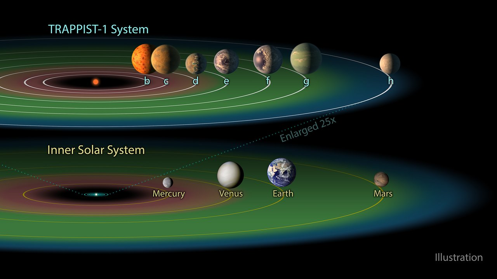

Space is something intriguing and inspires us due to its uncertainty. Its emptiness and its vastness is something that many of us have a hard time imagining especially as the universe expands every second, with every thought, every conversation, every mundane task one may perform. My inspiration for making this site was to spread awareness about our beautiful space, and to show how lucky we are to be living right now on the only planet that we for sure know of that can host life.
As we know, our solar system is made up of 8 planets, our sun, and Pluto. And we know for sure that the other planets can not be lived on. At least, not our kind. The reason for this being is that our solar system is made up of mostly gas giants. This includes Jupiter, Saturn, Uranus, and Neptune. What being a gas giant means is that the planet is essentially a big ball of gas. These planets do not have a "surface", or rather their surface is their core.
So, if we were to end up on these planets, we would just continue going through the planet and feeling the immense pressure (think about the ocean and how the atmosphere increases the further down we go) until we hit the core. So now we are only down to 4 planets and Pluto.
It is not possible to live on Mars. This is the unfortunate truth. Well, unless you wouldn't mind living in a space suit for the rest of your life. The reason why Mars hosts no life, despite it being a good distance from the sun, is due to its atmosphere. Something happened within Mars' core which caused its atmosphere to slowly disappear. This could have been due to the Sun's radiation being too strong for Mars and Mars atmosphere could not take it. Sorry for opinions but I am upset because it would have been awesome to have been possibly been able to travel and live on Mars without a space suit. Below is an image of mars, venus, and earth a few billion years ago.
Maybe it was a possibility that life forms were starting to form these billion years ago, but I think it is fair to assume that their fate was met. Venus is scorching hot because of its distance to the Sun. Not just because of its distance, but because of its thick atmosphere. Its thick atmosphere causes a greenhouse effect, essentially this makes the planet absorb more heat. Think like when you are in a car in the heat and you have the air off, windows up. It gets way hotter in there than outside. Sadly we got unlucky because imagine if Venus and Mars could have switched places. Either way, Mars' fate was obvious. Now, this is just me ranting because sure we didn't hit the lottery with 3 habitable planets but 2 could have been cool too. However Mars decided it should be farther even though its atmosphere got stripped off anyway.
To be fair, had we had more than one planet there is the morbid possibility that we would have destroyed at least 1 of those planets... possibly. Maybe it is a good thing there is only Earth. She is beautiful, perfect, and all we have. We should protect her and all her beauty.
Now that we have talked about the planets in or nearest to the habitable zone(which is the area like where Earth and Mars are,) let us not forget about Mercury. Poor Mercury had the unfortunate luck of being the planet closest to the sun. Now while the planet is clearly hot, it is not habitable not only because of this, but because, like, Mars, it has very little atmosphere. Sources say that it may be from Mercury being a bit smaller compared to the other planets, but it could also be because of its distance to the sun, thus its atmosphere being stripped away. So while it is still cooler than Venus, it is still too hot for life and also its lack of atmosphere.
Let's not forget about Pluto too. I am personally a fan of Pluto because it is sad how its title of being a planet got stripped of because it "couldn't clear its orbit". I don't even know what that means. But either way, the little guy seems like it is forgotten. It seems like a slap to the face considering that Pluto is already so far away.
I also wanted to bring up a specific moon; Enceladus. Enceladus is one of Saturn's moons and there is evidence that it may support life. This comes from the fact that it has oceans beneath ice and that it seems to have all life elements. However, it doesn't mean that humans are suitable for living on Enceladus because it is full of ice. So unless we were adapted to ice. Although I will say it would be cool to live there and see Saturn's beauty up close.
As we may or may not know, so far we have yet to find any planets that we for sure know host life. However, we shouldn't rule out the possibility of it happening. If Earth did it, I am sure that there are other planets. There is a system. around 40 light years from Earth, called the Trappist 1 system. This system, just like ours, has its own sun, and 7 planets. These 7 planets are orbiting a dwarf star, or a young star that is small and not as hot (compared to our sun.) 3 of these planets, TRAPPIST 1E, TRAPPIST 1F, AND TRAPPIST 1G are possibly able to harbor life. As seen in the demonstration below, planets 1E and 1F look similar to Earth. They seem to be able to have liquid oceans. However, we still are unsure if these planets have atmospheres. Still, we should hold hope and root for more habitable planets, even if they are far away.
